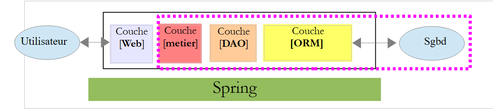
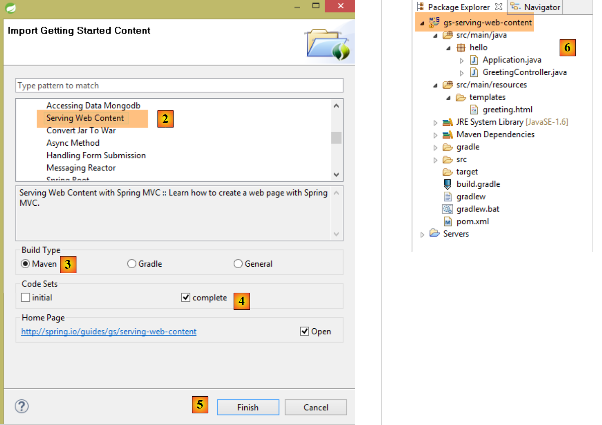
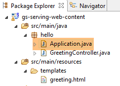
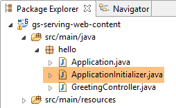

1. Introducción
El PDF de este documento está disponible |AQUÍ|.
Los ejemplos de este documento están disponibles |AQUÍ|.
En este documento nos proponemos presentar, mediante ejemplos, los conceptos importantes de Spring MVC, un marco de trabajo web Java que proporciona un entorno para desarrollar aplicaciones web según el modelo MVC (Modelo – Vista – Controlador). Spring MVC es una rama del ecosistema Spring [http://projects.spring.io/spring-framework/]. También presentamos el motor de vistas Thymeleaf [http://www.thymeleaf.org/].
Este curso está dirigido a lectores con un dominio real del lenguaje Java. No es necesario tener conocimientos de programación web.
Aunque es detallado, este documento probablemente esté incompleto. Spring es un marco de trabajo enorme con numerosas ramificaciones. Para profundizar en Spring MVC, se pueden utilizar las siguientes referencias:
- el documento de referencia del framework Spring [http://docs.spring.io/spring/docs/current/spring-framework-reference/pdf/spring-framework-reference.pdf];
- se pueden encontrar numerosos tutoriales de Spring en el URL [http://spring.io/guides]
- el sitio web de [developpez.com] dedicado a Spring [http://spring.developpez.com/].
El documento se ha redactado de tal manera que pueda leerse sin necesidad de tener un ordenador a mano. Por ello, se incluyen numerosas capturas de pantalla.
1.1. Fuentes
Este documento tiene dos fuentes principales:
- [Introducción al marco ASP.NET MVC a través de ejemplos (2013)]. Spring MVC y ASP.NET MVC son dos marcos análogos, habiéndose construido el segundo mucho después del primero. Para poder comparar ambos marcos, he seguido la misma progresión que en el documento sobre ASP.NET MVC;
- el documento sobre ASP.NET MVC no contiene por el momento (dic. 2014) ningún caso práctico con su solución. He retomado aquí el del documento [Tutoriel AngularJS / Spring 4], que he modificado de la siguiente manera:
- el caso práctico de [Un ejemplo de cliente/servidor: AngularJS 1.x / Spring 4 (2014)] es el de una aplicación cliente/servidor en la que el servidor es un servicio web / jSON creado con Spring MVC y el cliente, un cliente AngularJS,
- en este documento, se retoma el mismo servicio web / jSON, pero el cliente es una aplicación web de dos capas [client jQuery] / [service web / jSON];
Aparte de estas fuentes, busqué en Internet las respuestas a mis preguntas. Me resultó especialmente útil el sitio web [http://stackoverflow.com/].
1.2. Herramientas utilizadas
Los siguientes ejemplos se han probado en el siguiente entorno:
- ordenador con Windows 8.1 Pro de 64 bits;
- JDK 1.8;
- IDE Spring Tool Suite 3.6.3 (véase el apartado 9.3);
- navegador Chrome (no se han utilizado otros navegadores);
- extensión de Chrome [Advanced Rest Client] (véase el apartado 9.6);
Atención a JDK 1.8. Uno de los métodos del caso práctico utiliza un método del paquete [java.lang] de Java 8.
Todos los ejemplos son proyectos Maven que pueden abrirse indistintamente con los IDE Eclipse, IntellijIDEA y Netbeans. A continuación, las capturas de pantalla proceden de IDE Spring Tool Suite, una variante de Eclipse.
1.3. Los ejemplos
Los ejemplos están disponibles |AQUÍ| en forma de archivo zip para descargar.
 |
Para cargar todos los proyectos en STS, se procederá de la siguiente manera:
 |
 |
- en [1-3], importe proyectos Maven;
 |
- en [4], seleccione la carpeta de ejemplos;
- en [5], seleccione todos los proyectos de la carpeta;
- en [6], confirme;
- en [7], los proyectos importados;
1.4. El papel de Spring MVC en una aplicación web
Situemos Spring MVC en el desarrollo de una aplicación web. En la mayoría de los casos, esta se construirá sobre una arquitectura multicapa como la siguiente:
 |
- la capa [Web] es la capa en contacto con el usuario de la aplicación web. Este interactúa con la aplicación web a través de páginas web visualizadas por un navegador. Es en esta capa donde se sitúa Spring MVC y únicamente en esta capa;
- la capa [métier] implementa las reglas de gestión de la aplicación, como el cálculo de un salario o de una factura. Esta capa utiliza datos procedentes del usuario a través de la capa [Web] y de SGBD a través de la capa [DAO];
- la capa [DAO] (Data Access Objects), la capa [ORM] (Object Relational Mapper) y el controlador JDBC gestionan el acceso a los datos de SGBD. La capa [ORM] sirve de puente entre los objetos manipulados por la capa [DAO] y las filas y columnas de las tablas de una base de datos relacional. Aquí utilizaremos el ORM Hibernate. Una especificación denominada JPA (Java Persistence API) permite abstraerse del ORM utilizado si este implementa dichas especificaciones. Este es el caso de Hibernate y de otros ORM Java. Por lo tanto, a partir de ahora nos referiremos a la capa ORM como la capa JPA;
- la integración de las capas la realiza el framework Spring;
La mayoría de los ejemplos que se ofrecen a continuación utilizarán una sola capa, la capa [Web]:
 |
No obstante, este documento concluirá con la creación de una aplicación web de múltiples capas:
 |
El navegador se conectará a una aplicación [Web1] implementada por Spring MVC / Thymeleaf que obtendrá sus datos de un servicio web [Web2], también implementado con Spring MVC. Esta segunda aplicación web accederá a una base de datos.
1.5. El modelo de desarrollo de Spring MVC
Spring MVC implementa el modelo de arquitectura denominado MVC (Modelo – Vista – Controlador) de la siguiente manera:
 |
El procesamiento de una solicitud de un cliente se lleva a cabo de la siguiente manera:
- solicitud: las solicitudes URL tienen el formato http://máquina:puerto/contexto/Acción/param1/param2/....?p1=v1&p2=v2&... El [Front Controller] utiliza un archivo de configuración o anotaciones Java para «enrutar» la solicitud hacia el controlador adecuado y la acción correcta dentro de dicho controlador. Para ello, utiliza el campo [Action] del URL. El resto del URL [/param1/param2/...] está formado por parámetros opcionales que se transmitirán a la acción. El C de MVC es aquí la cadena [Front Controller, Contrôleur, Action]. Si ningún controlador puede procesar la acción solicitada, el servidor web responderá que no se ha encontrado la acción solicitada.
- El procesamiento
- La acción seleccionada puede utilizar los parámetros que le ha transmitido [Front Controller]. Estos pueden provenir de varias fuentes:
- la ruta [/param1/param2/...] del URL,
- de los parámetros [p1=v1&p2=v2] del URL,
- de los parámetros enviados por el navegador junto con su solicitud;
- al procesar la solicitud del usuario, la acción puede necesitar la capa [métier] [2b]. Una vez procesada la solicitud del cliente, esta puede generar diversas respuestas. Un ejemplo clásico es:
- una página de error si la solicitud no se ha podido procesar correctamente
- una página de confirmación en caso contrario
- la acción solicita que se muestre una vista determinada [3]. Esta vista mostrará datos que se denominan el modelo de la vista. Es la M de MVC. La acción creará este modelo M [2c] y solicitará que se muestre una vista V [3];
- respuesta: la vista V elegida utiliza el modelo M construido por la acción para inicializar las partes dinámicas de la respuesta HTML que debe enviar al cliente y, a continuación, envía dicha respuesta.
Ahora, precisemos la relación entre la arquitectura web MVC y la arquitectura por capas. Según la definición que se le dé al modelo, estos dos conceptos están relacionados o no. Tomemos una aplicación web Spring MVC de una sola capa:
 |
Si implementamos la capa [Web] con Spring MVC, tendremos una arquitectura web MVC, pero no una arquitectura multicapa. En este caso, la capa [web] se encargará de todo: presentación, lógica de negocio y acceso a los datos. Son las acciones las que realizarán este trabajo.
Ahora, consideremos una arquitectura web multicapa:
 |
La capa [Web] se puede implementar sin marco de trabajo y sin seguir el modelo MVC. En ese caso, se trata efectivamente de una arquitectura multicapa, pero la capa web no implementa el modelo MVC.
Por ejemplo, en el mundo .NET, la capa [Web]se puede implementar con ASP.NET MVC y entonces se obtiene una arquitectura en capas con una capa [Web] de tipo MVC. Una vez hecho esto, se puede sustituir esta capa ASP.NET MVC por una capa ASP.NET clásica (WebForms) manteniendo el resto (de negocio, DAO, ORM) tal cual. De este modo, se obtiene una arquitectura por capas con una capa [Web] que ya no es de tipo MVC.
En MVC, dijimos que el modelo M era el de la vista V, c.a.d. El conjunto de datos mostrados por la vista V. Se da otra definición del modelo M de MVC:
 |
Muchos autores consideran que lo que se encuentra a la derecha de la capa [Web] forma el modelo M del MVC. Para evitar ambigüedades, se puede hablar:
- del modelo del dominio cuando nos referimos a todo lo que se encuentra a la derecha de la capa [Web]
- del modelo de la vista cuando nos referimos a los datos mostrados por una vista V
En lo sucesivo, el término «modelo M» se referirá exclusivamente al modelo de una vista V.
1.6. Un primer proyecto Spring MVC
A partir de ahora, trabajaremos con la Spring Tool Suite (IDE), una variante de Eclipse personalizada para Spring. El sitio web [http://spring.io/guides] ofrece tutoriales de inicio para descubrir el ecosistema Spring. Vamos a seguir uno de ellos para descubrir la configuración de Maven necesaria para un proyecto Spring MVC.
Nota: la comprensión de los detalles del proyecto resultará complicada para la mayoría de los principiantes. No es importante. Estos detalles se explican más adelante en el documento. Nos limitaremos a reproducir los pasos.
1.6.1. El proyecto de demostración
 |
- en [1], importamos una de las guías de Spring;
 |
- en [2], elegimos el ejemplo [Serving Web Content];
- en [3], elegimos el proyecto Maven;
- en [4], tomamos la version final de la guía;
- en [5], validamos;
- en [6], el proyecto importado;
Examinemos el proyecto, en primer lugar su configuración de Maven.
1.6.2. Configuración de Maven
El archivo [pom.xml] es el siguiente:
<?xml version="1.0" encoding="UTF-8"?>
<project xmlns="http://maven.apache.org/POM/4.0.0" xmlns:xsi="http://www.w3.org/2001/XMLSchema-instance"
xsi:schemaLocation="http://maven.apache.org/POM/4.0.0 http://maven.apache.org/xsd/maven-4.0.0.xsd">
<modelVersion>4.0.0</modelVersion>
<groupId>org.springframework</groupId>
<artifactId>gs-serving-web-content</artifactId>
<version>0.1.0</version>
<parent>
<groupId>org.springframework.boot</groupId>
<artifactId>spring-boot-starter-parent</artifactId>
<version>1.1.9.RELEASE</version>
</parent>
<dependencies>
<dependency>
<groupId>org.springframework.boot</groupId>
<artifactId>spring-boot-starter-thymeleaf</artifactId>
</dependency>
</dependencies>
<properties>
<start-class>hello.Application</start-class>
</properties>
<build>
<plugins>
<plugin>
<groupId>org.springframework.boot</groupId>
<artifactId>spring-boot-maven-plugin</artifactId>
</plugin>
</plugins>
</build>
<repositories>
<repository>
<id>spring-milestone</id>
<url>https://repo.spring.io/libs-release</url>
</repository>
</repositories>
<pluginRepositories>
<pluginRepository>
<id>spring-milestone</id>
<url>https://repo.spring.io/libs-release</url>
</pluginRepository>
</pluginRepositories>
</project>
- líneas 6-8: las propiedades del proyecto Maven. Falta una etiqueta [<packaging>] que indique el tipo de archivo generado por la compilación de Maven. A falta de esta, se utiliza el tipo [jar]. Por lo tanto, la aplicación es una aplicación ejecutable de tipo consola, y no una aplicación web, en cuyo caso el empaquetado sería [war];
- líneas 10-14: el proyecto Maven tiene un proyecto padre [spring-boot-starter-parent]. Es este el que define la mayor parte de las dependencias del proyecto. Estas pueden ser suficientes, en cuyo caso no se añaden más, o no, en cuyo caso se añaden las dependencias que faltan;
- líneas 17-20: el artefacto [spring-boot-starter-thymeleaf] incluye las bibliotecas necesarias para un proyecto Spring MVC utilizado conjuntamente con un motor de vistas llamado [Thymeleaf]. Este artefacto incluye una gran cantidad de bibliotecas, entre las que se encuentran las de un servidor Tomcat integrado. Es en este servidor donde se ejecutará la aplicación;
Las bibliotecas que incluye esta configuración son muy numerosas:
 |  |
Arriba se ven los archivos del servidor Tomcat.
Spring Boot es una rama del ecosistema Spring [http://projects.spring.io/spring-boot/]. Este proyecto tiene como objetivo reducir al máximo la configuración de los proyectos Spring. Para ello, Spring Boot realiza una autoconfiguración a partir de las dependencias presentes en la ruta de clases del proyecto. Spring Boot proporciona numerosas dependencias listas para usar. Así, la dependencia [spring-boot-starter-thymeleaf] encontrada en el proyecto Maven anterior aporta todas las dependencias necesarias para una aplicación Spring MVC que utilice el motor de vistas [Thymeleaf]. Con estas dos características:
- dependencias listas para usar;
- autoconfiguración basada en estas dependencias y en valores por defecto «razonables», se puede tener muy rápidamente una aplicación Spring MVC operativa. Este es el caso del proyecto que se estudia aquí;
1.6.3. La arquitectura de una aplicación Spring MVC
Spring MVC implementa el modelo de arquitectura denominado MVC (Modelo – Vista – Controlador):
 |
El procesamiento de una solicitud de un cliente se lleva a cabo de la siguiente manera:
- solicitud: las URL solicitadas tienen el formato http://máquina:puerto/contexto/Acción/param1/param2/....?p1=v1&p2=v2&... [Dispatcher Servlet] es la clase de Spring que procesa las URL entrantes. Ella «enruta» la URL hacia la acción que debe procesarla. Estas acciones son métodos de clases específicas denominadas [Contrôleurs]. La C de MVC es aquí la cadena [Dispatcher Servlet, Contrôleur, Action]. Si no se ha configurado ninguna acción para procesar el URL entrante, el servlet [Dispatcher Servlet] responderá que no se ha encontrado el URL solicitado (error 404 NOT FOUND);
- procesamiento
- la acción seleccionada puede utilizar los parámetros que le ha transmitido el servlet [Dispatcher Servlet]. Estos pueden proceder de varias fuentes:
- la ruta [/param1/param2/...] del URL,
- de los parámetros [p1=v1&p2=v2] del URL,
- de los parámetros enviados por el navegador junto con su solicitud;
- al procesar la solicitud del usuario, la acción puede necesitar la capa [metier] [2b]. Una vez procesada la solicitud del cliente, esta puede generar diversas respuestas. Un ejemplo clásico es:
- una página de error si la solicitud no se ha podido procesar correctamente
- una página de confirmación en caso contrario
- la acción solicita que se muestre una vista determinada [3]. Esta vista mostrará datos que se denominan modelo de la vista. Es la M de MVC. La acción creará este modelo M [2c] y solicitará que se muestre una vista V [3];
- respuesta: la vista V seleccionada utiliza la plantilla M creada por la acción para inicializar las partes dinámicas de la respuesta HTML que debe enviar al cliente y, a continuación, envía dicha respuesta.
Vamos a examinar estos diferentes elementos en el proyecto estudiado.
1.6.4. El controlador C
 |
La aplicación importada tiene el siguiente controlador:
package hello;
import org.springframework.stereotype.Controller;
import org.springframework.ui.Model;
import org.springframework.web.bind.annotation.RequestMapping;
import org.springframework.web.bind.annotation.RequestParam;
@Controller
public class GreetingController {
@RequestMapping("/greeting")
public String greeting(@RequestParam(value="name", required=false, defaultValue="World") String name, Model model) {
model.addAttribute("name", name);
return "greeting";
}
}
- línea 8: la anotación [@Controller] convierte la clase [GreetingController] en un controlador Spring, es decir, que sus métodos se registran para gestionar URL. Un controlador Spring es un singleton. Se crea una única instancia;
- línea 11: la anotación [@RequestMapping] indica el URL que procesa el método, en este caso el URL [/greeting]. Más adelante veremos que este URL se puede parametrizar y que es posible recuperar dichos parámetros;
- línea 12: el método admite dos parámetros:
- [String name]: este parámetro se inicializa mediante un parámetro de nombre [name] en la consulta procesada, por ejemplo, [/greeting?name=alfonse]. Este parámetro es opcional [required=false] y, cuando no está presente, el parámetro [name] tomará el valor «World» [defaultValue="World"],
- [Model model] es un modelo de vista. Se recibe vacío y es la acción (el método greeting) la que se encarga de rellenarlo. Este modelo es el que se transmitirá a la vista que mostrará la acción. Por lo tanto, es un modelo de vista;
- línea 13: el valor de [name] se introduce en el modelo de la vista. La clase [Model] se comporta como un diccionario;
- línea 14: el método devuelve el nombre de la vista que debe mostrar el modelo construido. El nombre exacto de la vista depende de la configuración de [Thymeleaf]. A falta de esta, la vista que se mostrará aquí será la vista [/templates/greeting.html] o la carpeta [templates] debe estar en la raíz de la ruta de clases del proyecto;
Examinemos nuestro proyecto Eclipse:
 |
Las carpetas [src/main/java] y [src/main/resources] son carpetas cuyo contenido se incluirá en la ruta de clases del proyecto. En el caso de [src/main/java], se incluirán las versiones compiladas de los fuentes Java. El contenido de la carpeta [src/main/resources] se coloca en la ruta de clases sin modificaciones. Por lo tanto, vemos que la carpeta [templates] estará en la ruta de clases del proyecto [1].
Esto se puede comprobar en la ventana [Navigator] de Eclipse [Window / Show view / Other / General / Navigator]. La carpeta [target] se genera mediante la compilación (denominada «build») del proyecto. La carpeta [classes] representa la raíz del Classpath. Se observa que la carpeta [templates] está presente en ella.
1.6.5. La vista V
En MVC, acabamos de ver el controlador C y el modelo de vista M. La vista V está representada aquí por el siguiente archivo [greeting.html]:
<!DOCTYPE HTML>
<html xmlns:th="http://www.thymeleaf.org">
<head>
<title>Getting Started: Serving Web Content</title>
<meta http-equiv="Content-Type" content="text/html; charset=UTF-8" />
</head>
<body>
<p th:text="'Hello, ' + ${name} + '!'" />
</body>
</html>
- línea 2: el espacio de nombres de las etiquetas Thymeleaf;
- línea 8: una etiqueta <p> (párrafo) con un atributo Thymeleaf. El atributo [th:text] establece el contenido del párrafo. Dentro de la cadena de caracteres tenemos la expresión [${name}]. Esto significa que queremos el valor del atributo [name] de la plantilla de la vista. Ahora bien, recordamos que este atributo fue colocado en la plantilla mediante la acción:
model.addAttribute("name", name);
El primer parámetro establece el nombre del atributo, el segundo su valor.
1.6.6. Ejecución
 |
La clase [Application.java] es la clase ejecutable del proyecto. Su código es el siguiente:
package hello;
import org.springframework.boot.autoconfigure.EnableAutoConfiguration;
import org.springframework.boot.SpringApplication;
import org.springframework.context.annotation.ComponentScan;
@ComponentScan
@EnableAutoConfiguration
public class Application {
public static void main(String[] args) {
SpringApplication.run(Application.class, args);
}
}
- línea 11: la clase es ejecutable con un método [main] propio de las aplicaciones de consola. La clase [SpringApplication] de la línea 12 iniciará el servidor Tomcat presente en las dependencias e implementará el servicio web en él;
- línea 4: vemos que la clase [SpringApplication] pertenece al proyecto [Spring Boot];
- línea 12: el primer parámetro es la clase que configura el proyecto, el segundo los posibles parámetros;
- línea 8: la anotación [@EnableAutoConfiguration] solicita a Spring Boot que realice la configuración del proyecto;
- línea 7: la anotación [@ComponentScan] hace que se explore la carpeta que contiene la clase [Application] para buscar los componentes de Spring. Se encontrará uno, la clase [GreetingController], que tiene la anotación [@Controller], lo que la convierte en un componente Spring;
Ejecutemos el proyecto:
 |
Se obtienen los siguientes registros de consola:
- línea 13: el servidor Tomcat se inicia en el puerto 8080 (línea 12);
- línea 17: el servlet [DispatcherServlet] está presente;
- línea 20: se ha detectado el método [hello.GreetingController.greeting], así como el URL que procesa el [/greeting];
Para probar la aplicación web, se solicita el URL [http://localhost:8080/greeting]:
 |  |
Puede resultar interesante ver los encabezados HTTP enviados por el servidor. Para ello, utilizaremos el complemento de Chrome llamado [Advanced Rest Client] (véase el apartado 9.6):
 |
- en [1], el URL solicitado;
- en [2], se utiliza el método GET;
- en [3], el servidor indicó que enviaba una respuesta en formato HTML;
- en [4], la respuesta HTML;
- en [5], se solicita el mismo URL, pero esta vez con un POST;
- en [7], la información se envía al servidor en forma de [urlencoded];
- en [6], el parámetro name con su valor;
- en [8], el navegador indica al servidor que le envía información [urlencoded];
- en [9], la respuesta HTML del servidor;
Para detener la aplicación:
 |  |  |
1.6.7. Creación de un archivo ejecutable
Es posible crear un archivo ejecutable fuera de Eclipse. La configuración necesaria se encuentra en el archivo [pom.xml]:
<properties>
<start-class>hello.Application</start-class>
</properties>
<build>
<plugins>
<plugin>
<groupId>org.springframework.boot</groupId>
<artifactId>spring-boot-maven-plugin</artifactId>
</plugin>
</plugins>
</build>
- las líneas 7-10 definen el complemento que creará el archivo ejecutable;
- la línea 2 define la clase ejecutable del proyecto;
Se procede de la siguiente manera:
 |
- en [1]: se ejecuta un objetivo de Maven;
 |
- en [2]: hay dos objetivos (goals): [clean] para eliminar la carpeta [target] del proyecto Maven, [package] para regenerarla;
- en [3]: la carpeta [target] generada se creará en esta carpeta;
- en [4]: se genera el objetivo;
Nota: para que la generación se realice correctamente, es necesario que el JVM utilizado por STS sea un JDK [Window / Preferences / Java / Installed JREs]:
 |
En los registros que aparecen en la consola, es importante que aparezca el plugin [spring-boot-maven-plugin]. Es este el que genera el archivo ejecutable.
[INFO] --- spring-boot-maven-plugin:1.1.9.RELEASE:repackage (predeterminado) @ gs-serving-web-content ---
Con una consola, nos situamos en la carpeta generada:
gs-serving-web-content-complete\target>dir
...
Répertoire de D:\data\istia-1415\spring mvc\dvp\gs-serving-web-content-complete
\target
27/11/2014 17:07 <DIR> .
27/11/2014 17:07 <DIR> ..
27/11/2014 17:07 <DIR> classes
27/11/2014 17:07 <DIR> generated-sources
27/11/2014 17:07 13 419 551 gs-serving-web-content-0.1.0.jar
27/11/2014 17:07 3 522 gs-serving-web-content-0.1.0.jar.original
27/11/2014 17:07 <DIR> maven-archiver
27/11/2014 17:07 <DIR> maven-status
- línea 12: el archivo generado;
Este archivo se ejecuta de la siguiente manera:
gs-serving-web-content-complete\target>java -jar gs-serving-web-content-0.1.0.jar
. ____ _ __ _ _
/\\ / ___'_ __ _ _(_)_ __ __ _ \ \ \ \
( ( )\___ | '_ | '_| | '_ \/ _` | \ \ \ \
\\/ ___)| |_)| | | | | || (_| | ) ) ) )
' |____| .__|_| |_|_| |_\__, | / / / /
=========|_|==============|___/=/_/_/_/
:: Spring Boot :: (v1.1.9.RELEASE)
2014-11-27 17:14:50.439 INFO 8172 --- [ main] hello.Application : Iniciando la aplicación en Gportpers3 con PID 8172 (D:\data\istia-1415\spring mvc\dvp\gs-serving-web-content-complete\target\gs-serving-web-content-0.1.0.jar iniciado por ST en D:\data\istia-1415\spring mvc\dvp\gs-serving-web-content-complete\target)
2014-11-27 17:14:50.491 INFO 8172 --- [ main] ationConfigEmbeddedWebApplicationContext : Actualizando org.springframework.boot.context.embedded.AnnotationConfigEmbeddedWebApplicationContext@12f4ec3a: fecha de inicio [Thu Nov 27 17:14:50 CET 2014]; raíz de la jerarquía de contexto
Nota: antes hay que detener el servicio web que pueda haberse iniciado en Eclipse (véase la página 17).
Ahora que la aplicación web está en marcha, se puede consultar con un navegador:
 |
1.6.8. Implementar la aplicación en un servidor Tomcat
Aunque Spring Boot resulta muy práctico en modo de desarrollo, una aplicación en producción se implementará en un servidor Tomcat real. A continuación se explica cómo hacerlo:
Modifique el archivo [pom.xml] de la siguiente manera:
<?xml version="1.0" encoding="UTF-8"?>
<project xmlns="http://maven.apache.org/POM/4.0.0" xmlns:xsi="http://www.w3.org/2001/XMLSchema-instance"
xsi:schemaLocation="http://maven.apache.org/POM/4.0.0 http://maven.apache.org/xsd/maven-4.0.0.xsd">
<modelVersion>4.0.0</modelVersion>
<groupId>org.springframework</groupId>
<artifactId>gs-serving-web-content</artifactId>
<version>0.1.0</version>
<packaging>war</packaging>
<parent>
<groupId>org.springframework.boot</groupId>
<artifactId>spring-boot-starter-parent</artifactId>
<version>1.1.9.RELEASE</version>
</parent>
<dependencies>
<!-- entorno Thymeleaf -->
<dependency>
<groupId>org.springframework.boot</groupId>
<artifactId>spring-boot-starter-thymeleaf</artifactId>
</dependency>
<!-- generación del WAR -->
<!-- <dependency>
<groupId>org.springframework.boot</groupId>
<artifactId>spring-boot-starter-tomcat</artifactId>
<scope>provided</scope>
</dependency> -->
</dependencies>
<properties>
<start-class>hello.Application</start-class>
</properties>
<build>
<plugins>
<plugin>
<groupId>org.springframework.boot</groupId>
<artifactId>spring-boot-maven-plugin</artifactId>
</plugin>
</plugins>
</build>
<repositories>
<repository>
<id>spring-milestone</id>
<url>https://repo.spring.io/libs-release</url>
</repository>
</repositories>
<pluginRepositories>
<pluginRepository>
<id>spring-milestone</id>
<url>https://repo.spring.io/libs-release</url>
</pluginRepository>
</pluginRepositories>
</project>
Los cambios deben realizarse en dos lugares:
- línea 9: hay que indicar que se va a generar un archivo WAR (Web ARchive);
- líneas 24-28: hay que añadir una dependencia del artefacto [spring-boot-starter-tomcat]. Este artefacto incluye todas las clases de Tomcat en las dependencias del proyecto;
- línea 27: este artefacto es [provided], es decir, que los archivos correspondientes no se incluirán en el WAR generado. De hecho, estos archivos se encontrarán en el servidor Tomcat en el que se ejecutará la aplicación;
De hecho, si observamos las dependencias actuales del proyecto, vemos que la dependencia [spring-boot-starter-tomcat] ya está presente:
 |
Por lo tanto, no es necesario añadirla al archivo [pom.xml]. La hemos comentado a modo de nota.
Además, hay que configurar la aplicación web. Al no existir el archivo [web.xml], esto se hace con una clase que hereda de [SpringBootServletInitializer]:
 |
La clase [ApplicationInitializer] es la siguiente:
package hello;
import org.springframework.boot.builder.SpringApplicationBuilder;
import org.springframework.boot.context.web.SpringBootServletInitializer;
public class ApplicationInitializer extends SpringBootServletInitializer {
@Override
protected SpringApplicationBuilder configure(SpringApplicationBuilder application) {
return application.sources(Application.class);
}
}
- línea 6: la clase [ApplicationInitializer] extiende la clase [SpringBootServletInitializer];
- línea 9: el método [configure] se redefine (línea 8);
- línea 10: se proporciona la clase que configura el proyecto;
Para ejecutar el proyecto, se puede proceder de la siguiente manera:
 |
- en [1], se ejecuta el proyecto en uno de los servidores registrados en IDE Eclipse;
- en [2], se selecciona [Tomcat v8.0];
Una vez hecho esto, se puede solicitar el URL [http://localhost:8080/gs-rest-service/greeting/?name=Mitchell] en un navegador:
 |
Nota: dependiendo de las versiones de [tomcat] y [tc Server Developer], esta ejecución puede fallar. Este fue el caso con [Apache Tomcat 8.0.3 et 8.0.15], por ejemplo. En el ejemplo anterior, el version de Tomcat utilizado era el [8.0.9].
Ahora sabemos cómo generar un archivo WAR. A continuación, seguiremos trabajando con Spring Boot y su archivo ejecutable jar.
1.7. Un segundo proyecto Spring MVC
1.7.1. El proyecto de demostración
 |
- en [1], importamos una de las guías de Spring;
 |
- en [2], seleccionamos el ejemplo [Rest Service];
- en [3], elegimos el proyecto Maven;
- en [4], tomamos la version final de la guía;
- en [5], validamos;
- en [6], el proyecto importado;
Los servicios web accesibles a través de URL estándar y que proporcionan texto jSON suelen denominarse servicios REST (REpresentational State Transfer). En este documento, me limitaré a llamar al servicio que vamos a construir un servicio web / jSON. Un servicio se denomina Restful si cumple ciertas reglas. No he intentado cumplirlas.
Examinemos ahora el proyecto importado, en primer lugar su configuración de Maven.
1.7.2. Configuración de Maven
El archivo [pom.xml] es el siguiente:
<?xml version="1.0" encoding="UTF-8"?>
<project xmlns="http://maven.apache.org/POM/4.0.0" xmlns:xsi="http://www.w3.org/2001/XMLSchema-instance"
xsi:schemaLocation="http://maven.apache.org/POM/4.0.0 http://maven.apache.org/xsd/maven-4.0.0.xsd">
<modelVersion>4.0.0</modelVersion>
<groupId>org.springframework</groupId>
<artifactId>gs-rest-service</artifactId>
<version>0.1.0</version>
<parent>
<groupId>org.springframework.boot</groupId>
<artifactId>spring-boot-starter-parent</artifactId>
<version>1.1.9.RELEASE</version>
</parent>
<dependencies>
<dependency>
<groupId>org.springframework.boot</groupId>
<artifactId>spring-boot-starter-web</artifactId>
</dependency>
</dependencies>
<properties>
<start-class>hello.Application</start-class>
</properties>
<build>
<plugins>
<plugin>
<groupId>org.springframework.boot</groupId>
<artifactId>spring-boot-maven-plugin</artifactId>
</plugin>
</plugins>
</build>
<repositories>
<repository>
<id>spring-releases</id>
<url>https://repo.spring.io/libs-release</url>
</repository>
</repositories>
<pluginRepositories>
<pluginRepository>
<id>spring-releases</id>
<url>https://repo.spring.io/libs-release</url>
</pluginRepository>
</pluginRepositories>
</project>
- líneas 6-8: las propiedades del proyecto Maven. Falta una etiqueta [<packaging>] que indique el tipo de archivo generado por la compilación de Maven. A falta de esta, se utiliza el tipo [jar]. Por lo tanto, la aplicación es una aplicación ejecutable de tipo consola, y no una aplicación web, en cuyo caso el empaquetado sería [war];
- líneas 10-14: el proyecto Maven tiene un proyecto padre [spring-boot-starter-parent]. Es este el que define la mayor parte de las dependencias del proyecto. Estas pueden ser suficientes, en cuyo caso no se añaden más, o no, en cuyo caso se añaden las dependencias que faltan;
- líneas 17-20: el artefacto [spring-boot-starter-web] incluye las bibliotecas necesarias para un proyecto Spring MVC de tipo servicio web en el que no hay vistas generadas. Este artefacto incluye una gran cantidad de bibliotecas, entre las que se encuentran las de un servidor Tomcat integrado. Es en este servidor donde se ejecutará la aplicación;
Las bibliotecas que incluye esta configuración son muy numerosas:
 |  |
| |
Arriba se ven los tres archivos del servidor Tomcat.
1.7.3. La arquitectura de un servicio Spring [web / jSON]
Recordemos cómo Spring MVC implementa el modelo MVC:
 |
El procesamiento de una solicitud de un cliente se lleva a cabo de la siguiente manera:
- solicitud: las URL solicitadas tienen el formato http://máquina:puerto/contexto/Acción/param1/param2/....?p1=v1&p2=v2&... [Dispatcher Servlet] es la clase de Spring que procesa los URL entrantes. Ella «enruta» el URL hacia la acción que debe procesarlo. Estas acciones son métodos de clases específicas denominadas [Contrôleurs]. La C de MVC es aquí la cadena [Dispatcher Servlet, Contrôleur, Action]. Si no se ha configurado ninguna acción para procesar el URL entrante, el servlet [Dispatcher Servlet] responderá que no se ha encontrado el URL solicitado (error 404 NOT FOUND);
- procesamiento
- la acción seleccionada puede utilizar los parámetros que le ha transmitido el servlet [Dispatcher Servlet]. Estos pueden proceder de varias fuentes:
- la ruta [/param1/param2/...] del URL,
- de los parámetros [p1=v1&p2=v2] del URL,
- de los parámetros enviados por el navegador junto con su solicitud;
- al procesar la solicitud del usuario, la acción puede necesitar la capa [metier] [2b]. Una vez procesada la solicitud del cliente, esta puede generar diversas respuestas. Un ejemplo clásico es:
- una página de error si la solicitud no se ha podido procesar correctamente
- una página de confirmación en caso contrario
- la acción solicita que se muestre una vista determinada [3]. Esta vista mostrará datos que se denominan el modelo de la vista. Es la M de MVC. La acción creará este modelo M [2c] y solicitará que se muestre una vista V [3];
- respuesta: la vista V seleccionada utiliza la plantilla M creada por la acción para inicializar las partes dinámicas de la respuesta HTML que debe enviar al cliente y, a continuación, envía dicha respuesta.
Para un servicio web / jSON, la arquitectura anterior se modifica ligeramente:
 |
- en [4a], el modelo, que es una clase Java, se transforma en una cadena jSON mediante una biblioteca jSON;
- en [4b], esta cadena jSON se envía al navegador;
1.7.4. El controlador C
 |
La aplicación importada tiene el siguiente controlador:
package hello;
import java.util.concurrent.atomic.AtomicLong;
import org.springframework.web.bind.annotation.RequestMapping;
import org.springframework.web.bind.annotation.RequestParam;
import org.springframework.web.bind.annotation.RestController;
@RestController
public class GreetingController {
private static final String template = "Hello, %s!";
private final AtomicLong counter = new AtomicLong();
@RequestMapping("/greeting")
public Greeting greeting(@RequestParam(value = "name", defaultValue = "World") String name) {
return new Greeting(counter.incrementAndGet(), String.format(template, name));
}
}
- línea 9: la anotación [@RestController] convierte la clase [GreetingController] en un controlador Spring, es decir, que sus métodos se registran para gestionar objetos URL. Ya hemos visto la anotación similar [@Controller]. El resultado de los métodos de ese controlador era un tipo [String], que era el nombre de la vista que se iba a mostrar. Aquí es diferente. Los métodos de un controlador de tipo [@RestController] devuelven objetos que se serializan para enviarlos al navegador. El tipo de serialización que se realiza depende de la configuración de Spring MVC. Aquí, se serializarán en jSON. Es la presencia de una biblioteca jSON en las dependencias del proyecto lo que hace que Spring Boot, mediante autoconfiguración, configure el proyecto de esta manera;
- línea 14: la anotación [@RequestMapping] indica el URL que procesa el método, en este caso el URL [/greeting];
- línea 15: ya hemos explicado la anotación [@RequestParam]. El resultado devuelto por el método es un objeto de tipo [Greeting].
- línea 12: un entero long de tipo atómico. Esto significa que admite el acceso concurrente. Varios subprocesos pueden querer incrementar la variable [counter] al mismo tiempo. Esto se hará correctamente. Un subproceso solo puede leer el valor del contador si el subproceso que lo está modificando ha finalizado su modificación.
1.7.5. El modelo M
El modelo M generado por el método anterior es el siguiente objeto [Greeting]:
 |
package hello;
public class Greeting {
private final long id;
private final String content;
public Greeting(long id, String content) {
this.id = id;
this.content = content;
}
public long getId() {
return id;
}
public String getContent() {
return content;
}
}
La transformación jSON de este objeto creará la cadena de caracteres {"id":n,"content":"texto"}. Al final, la cadena jSON generada por el método del controlador tendrá la forma:
{"id":2,"content":"Hello, World!"}
o
{"id":2,"content":"Hello, John!"}
1.7.6. Ejecución
 |
La clase [Application.java] es la clase ejecutable del proyecto. Su código es el siguiente:
package hello;
import org.springframework.boot.autoconfigure.EnableAutoConfiguration;
import org.springframework.boot.SpringApplication;
import org.springframework.context.annotation.ComponentScan;
@ComponentScan
@EnableAutoConfiguration
public class Application {
public static void main(String[] args) {
SpringApplication.run(Application.class, args);
}
}
Ya hemos visto y explicado este código en el ejemplo anterior.
1.7.7. Ejecución del proyecto
Ejecutemos el proyecto:
|
Se obtienen los siguientes registros de consola:
- línea 13: el servidor Tomcat se inicia en el puerto 8080 (línea 12);
- línea 17: el servlet [DispatcherServlet] está presente;
- línea 20: se ha detectado el método [GreetingController.greeting];
Para probar la aplicación web, se solicita el URL [http://localhost:8080/greeting]:
 |  |
Se recibe correctamente la cadena esperada jSON.
Nota: este ejemplo no ha funcionado con el navegador integrado de Eclipse.
Puede resultar interesante ver los encabezados HTTP enviados por el servidor. Para ello, utilizaremos el complemento de Chrome llamado [Advanced Rest Client] (véase Anexos, apartado 9.6):
 |
- en [1], el URL solicitado;
- en [2], se utiliza el método GET;
- en [3], la respuesta jSON;
- en [4], el servidor indicó que enviaba una respuesta en formato jSON;
- en [5], se solicita el mismo URL, pero esta vez con un POST;
- en [7], la información se envía al servidor en formato [urlencoded];
- en [6], el parámetro name con su valor;
- en [8], el navegador indica al servidor que le envía información [urlencoded];
- en [9], la respuesta jSON del servidor;
1.7.8. Creación de un archivo ejecutable
Al igual que hicimos en el proyecto anterior, creamos un archivo ejecutable:
 |
 |
- en [1]: se ejecuta un objetivo de Maven;
- en [2]: hay dos objetivos (goals): [clean] para eliminar la carpeta [target] del proyecto Maven, [package] para regenerarla;
- en [3]: la carpeta [target] generada se creará en esta carpeta;
- en [4]: se genera el objetivo;
En los registros que aparecen en la consola, es importante que aparezca el plugin [spring-boot-maven-plugin]. Es este el que genera el archivo ejecutable.
Con una consola, nos situamos en la carpeta generada:
D:\Temp\wksSTS\gs-rest-service\target>dir
...
11/06/2014 15:30 <DIR> classes
11/06/2014 15:30 <DIR> generated-sources
11/06/2014 15:30 11 073 572 gs-rest-service-0.1.0.jar
11/06/2014 15:30 3 690 gs-rest-service-0.1.0.jar.original
11/06/2014 15:30 <DIR> maven-archiver
11/06/2014 15:30 <DIR> maven-status
...
- línea 5: el archivo generado;
Este archivo se ejecuta de la siguiente manera:
D:\Temp\wksSTS\gs-rest-service-complete\target>java -jar gs-rest-service-0.1.0.jar
. ____ _ __ _ _
/\\ / ___'_ __ _ _(_)_ __ __ _ \ \ \ \
( ( )\___ | '_ | '_| | '_ \/ _` | \ \ \ \
\\/ ___)| |_)| | | | | || (_| | ) ) ) )
' |____| .__|_| |_|_| |_\__, | / / / /
=========|_|==============|___/=/_/_/_/
:: Spring Boot :: (v1.1.0.RELEASE)
2014-06-11 15:32:47.088 INFO 4972 --- [ main] hello.Application
: Starting Application on Gportpers3 with PID 4972 (D:\Temp\wk
sSTS\gs-rest-service-complete\target\gs-rest-service-0.1.0.jar started by ST in
D:\Temp\wksSTS\gs-rest-service-complete\target)
...
Nota: antes hay que detener el servicio web que se haya iniciado en Eclipse (véase el apartado 1.6.6).
Ahora que la aplicación web está en marcha, se puede consultar con un navegador:
 |
1.7.9. Implementar la aplicación en un servidor Tomcat
Al igual que en el proyecto anterior, modificamos el archivo [pom.xml] de la siguiente manera:
<?xml version="1.0" encoding="UTF-8"?>
<project xmlns="http://maven.apache.org/POM/4.0.0" xmlns:xsi="http://www.w3.org/2001/XMLSchema-instance"
xsi:schemaLocation="http://maven.apache.org/POM/4.0.0 http://maven.apache.org/xsd/maven-4.0.0.xsd">
<modelVersion>4.0.0</modelVersion>
<groupId>org.springframework</groupId>
<artifactId>gs-rest-service</artifactId>
<version>0.1.0</version>
<packaging>war</packaging>
...
</project>
- línea 9: hay que indicar que se va a generar un archivo WAR (Web ARchive);
Además, hay que configurar la aplicación web. A falta del archivo [web.xml], esto se hace con una clase que hereda de [SpringBootServletInitializer]:
 |
La clase [ApplicationInitializer] es la siguiente:
package hello;
import org.springframework.boot.builder.SpringApplicationBuilder;
import org.springframework.boot.context.web.SpringBootServletInitializer;
public class ApplicationInitializer extends SpringBootServletInitializer {
@Override
protected SpringApplicationBuilder configure(SpringApplicationBuilder application) {
return application.sources(Application.class);
}
}
- línea 6: la clase [ApplicationInitializer] extiende la clase [SpringBootServletInitializer];
- línea 9: el método [configure] se redefine (línea 8);
- línea 10: se proporciona la clase que configura el proyecto;
Para ejecutar el proyecto, se puede proceder de la siguiente manera:
 |
- en [1-2], se ejecuta el proyecto en uno de los servidores registrados en el IDE Eclipse;
Una vez hecho esto, se puede solicitar el URL [http://localhost:8080/gs-rest-service/greeting/?name=Mitchell] en un navegador:
|
1.8. Conclusión
Hemos presentado dos tipos de proyectos Spring:
- un proyecto en el que la aplicación web envía un flujo HTML al navegador. Este flujo es generado por el motor de vistas [Thymeleaf];
- un proyecto en el que la aplicación web envía un flujo jSON al navegador;
En el primer caso, el proyecto necesita dos dependencias de Maven:
<parent>
<groupId>org.springframework.boot</groupId>
<artifactId>spring-boot-starter-parent</artifactId>
<version>1.1.9.RELEASE</version>
</parent>
<dependencies>
<dependency>
<groupId>org.springframework.boot</groupId>
<artifactId>spring-boot-starter-thymeleaf</artifactId>
</dependency>
</dependencies>
En el segundo caso, las dependencias de Maven son las siguientes:
<parent>
<groupId>org.springframework.boot</groupId>
<artifactId>spring-boot-starter-parent</artifactId>
<version>1.1.9.RELEASE</version>
</parent>
<dependencies>
<dependency>
<groupId>org.springframework.boot</groupId>
<artifactId>spring-boot-starter-web</artifactId>
</dependency>
</dependencies>
Las dependencias que se derivan de estas configuraciones son muy numerosas y muchas de ellas son innecesarias. Para la puesta en marcha de la aplicación, utilizaremos una configuración manual de Maven en la que solo estarán presentes las dependencias necesarias para el proyecto.
Ahora volveremos a los fundamentos de la programación web presentando dos conceptos básicos:
- el diálogo HTTP (Protocolo de Transferencia HyperText) entre un navegador y una aplicación web;
- el lenguaje HTML (HyperText Markup Language) que el navegador interpreta para mostrar una página que ha recibido;